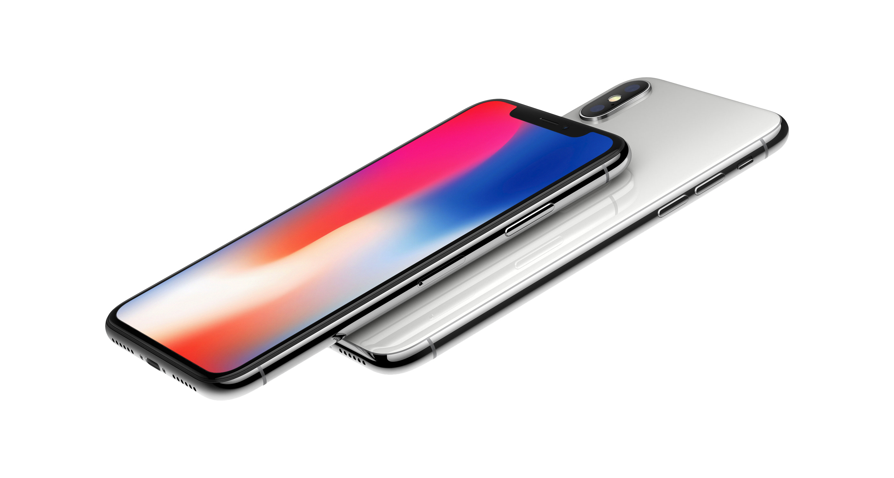
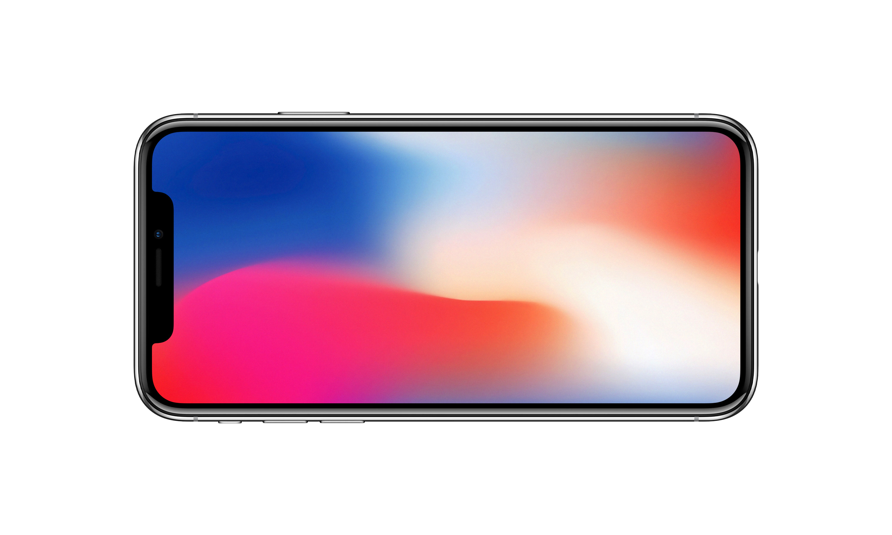

어떻게 하면 외장과 디스플레이가 아무 방해 요소 없이 하나로 합쳐진 고도의 지능형 기기를 만들 수 있을까?
이는 우리가 첫 번째 iPhone과 함께 세운 목표였습니다.
그리고 이제 iPhone X에 이르러 그것은 현실이 되었습니다.
새로운 공법과 기술이 적용된 디스플레이는 우아하게 처리된 둥근 모서리 구석에 이르기까지 전체 디자인의 곡선을 정확하게 따라갑니다.

사용 경험을 방해하는 그 무엇도 없이 매끈하게 펼쳐진 기기의 앞면을 만들기 위해, 우리는 홈 버튼을 없앴습니다.
그리고 그 역할을 대신할, 새로우면서도 익숙한 방식을 도입했습니다.